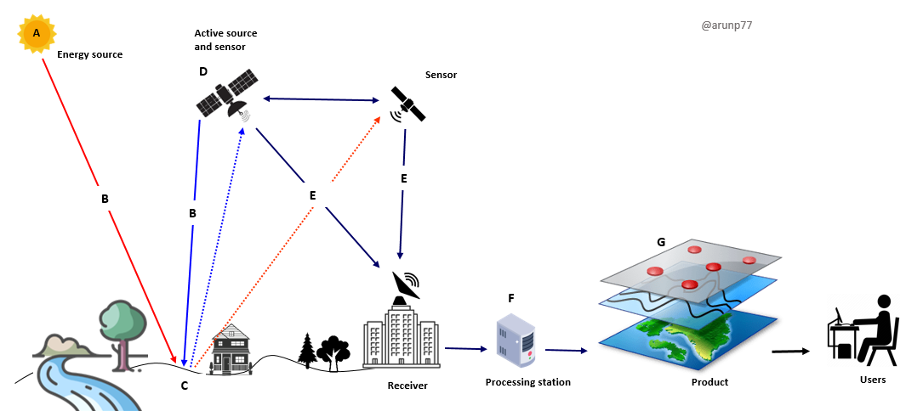
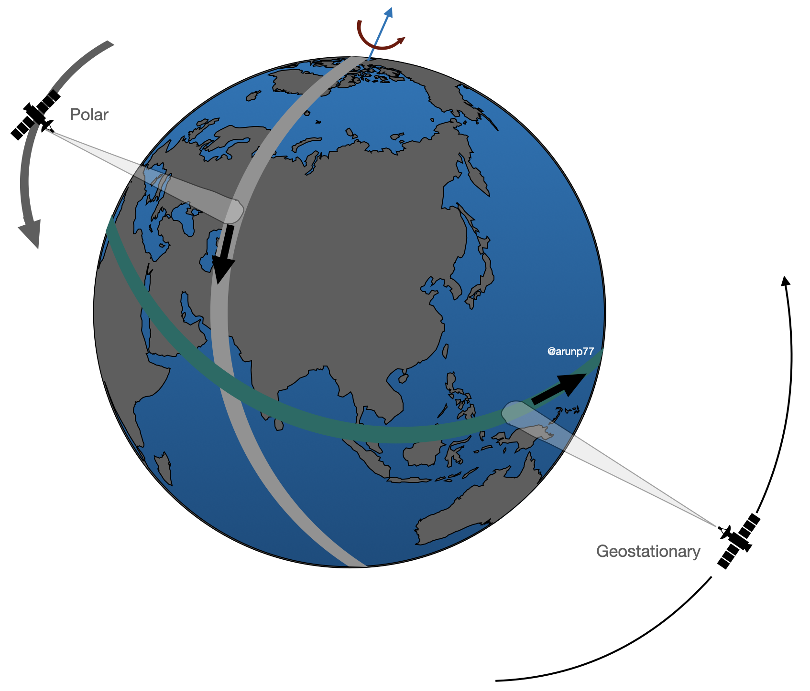
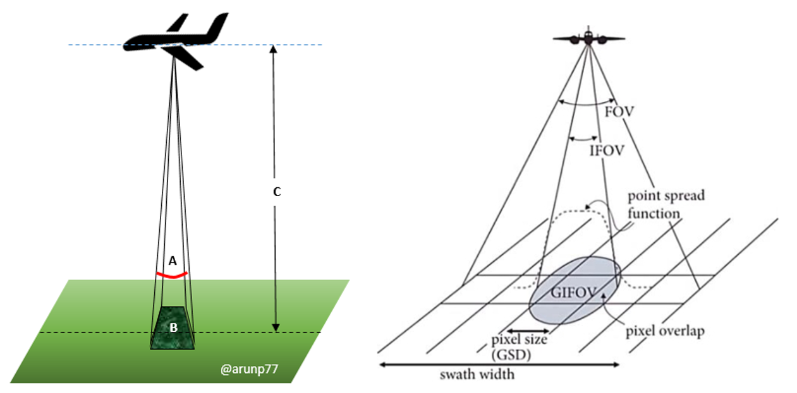
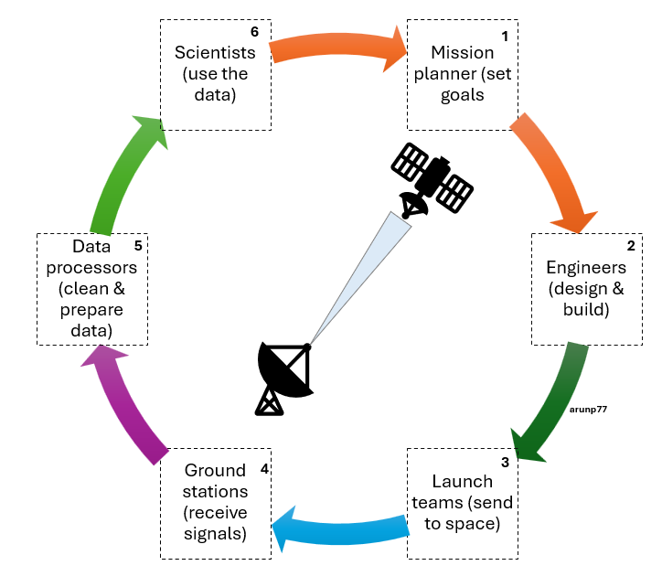

Remote Sensing & Satellite Data
A short, practical guide for newcomers: how satellites observe the Earth, what they measure, where to get the data and how it is used, with a focus on the atmosphere.
1What is remote sensing?
Remote sensing is the science of learning about an object, surface or gas without touching it, by measuring the electromagnetic radiation it reflects, emits or scatters. Satellites do this over the whole globe, repeatedly, which no network of ground stations can match.

Passive
Records natural radiation. Examples: optical cameras, spectrometers (TROPOMI, MODIS), thermal and microwave radiometers. Needs sunlight for reflected bands.
Active
Emits energy and measures the return. Examples: SAR radar (Sentinel-1), lidar (CALIPSO, ICESat-2), radar altimeters. Works day and night; radar sees through cloud.
Why it matters
Global coverage, consistent long records, access to remote regions (oceans, poles, forests) and a view of how pollution and climate vary in space and time.
2The physics: spectrum, windows and signatures
Every material interacts with light differently at different wavelengths. Gases absorb at narrow, characteristic wavelengths (their "fingerprints"), while surfaces have broad reflectance patterns.
- Absorption, scattering, emission: the signal reaching the sensor is the surface signal modified by the atmosphere (Rayleigh and aerosol scattering, gas absorption, thermal emission).
- Beer–Lambert law: absorption by a gas grows with its amount along the light path. This is the basis for retrieving trace gas columns such as NO₂, O₃, HCHO and CH₄.
- Radiance vs reflectance vs brightness temperature: radiance is what is measured; reflectance normalises it by the Sun, brightness temperature is the equivalent blackbody temperature in the thermal IR.
3Platforms and orbits
Where the sensor sits decides what it can see and how often.

- Polar, sun-synchronous LEO (600–830 km): passes over the same local time every day and covers the globe in swaths. Landsat, Sentinel-2/3/5P, MODIS, VIIRS, Metop, Aura.
- Geostationary (35,786 km): hovers over one point on the equator and images it every 5–15 min. GOES, Himawari, Meteosat, INSAT, GEMS, TEMPO, Sentinel-4.
- Inclined LEO and others: GPM, ISS instruments, MEO constellations, and DSCOVR at Lagrange point L1.
Trade-off in one line: low orbits give fine detail and global coverage but infrequent looks; geostationary orbits give frequent looks but a coarser, fixed view that degrades towards high latitudes. Aircraft, balloons and drones fill the gap with high-detail, targeted measurements.
4Sensors and the four resolutions
A sensor is described by what it can resolve in space, wavelength, time and brightness.

Imagers (multispectral)
A handful to tens of broad bands. Land cover, clouds, vegetation, water: Landsat, Sentinel-2, MODIS, VIIRS.
Spectrometers (hyper-spectral)
Hundreds to thousands of narrow channels. Trace gases and aerosols: TROPOMI, OMI, IASI, CrIS, GOSAT.
Radar and lidar
Active measurements of surface roughness, deformation, topography, cloud and aerosol profiles, ice height.
Microwave radiometers & sounders
Rainfall, soil moisture, sea-surface temperature, sea ice, vertical temperature and humidity profiles.
5Key missions and datasets
A starter map, not an exhaustive list. Always check the mission page for current status, resolution and versions.
| Mission / sensor | Type & orbit | Typical resolution | Mainly used for |
|---|---|---|---|
| Landsat 8/9 (NASA/USGS) | Optical + thermal, LEO | 30 m, ~16-day revisit per satellite | Land cover, change detection, long records (back to 1972 with the series) |
| Sentinel-2 (Copernicus) | Optical, 13 bands, LEO | 10–60 m, ~5 days with two satellites | Vegetation, agriculture, water, urban |
| Sentinel-1 (Copernicus) | C-band SAR, LEO | ~5–20 m, 6–12 days | Floods, ground deformation, ships, sea ice, soil moisture |
| MODIS (Terra, Aqua), VIIRS | Wide-swath imagers, LEO | 250 m – 1 km, daily | Aerosol optical depth, fires, vegetation, SST, snow, clouds |
| Sentinel-5P / TROPOMI | UV–SWIR spectrometer, LEO | ~5.5 × 3.5 km, daily global | NO₂, O₃, HCHO, SO₂, CO, CH₄, aerosol index |
| OMI (Aura), OMPS, GOME-2 | UV–Vis spectrometers, LEO | 10s of km | Long NO₂, O₃, SO₂, HCHO records |
| IASI (Metop), CrIS, AIRS | Thermal-IR sounders, LEO | ~12–50 km | Temperature/humidity profiles, CO, O₃, NH₃, CH₃OH, PAN |
| OCO-2/3, GOSAT | NIR/SWIR spectrometers | km scale | CO₂ and CH₄ columns |
| CALIPSO, EarthCARE | Lidar / radar, LEO | Vertical profiles along track | Aerosol and cloud layers |
| GOES, Himawari, Meteosat (MSG/MTG), INSAT | Geostationary imagers | 0.5–2 km, every 5–15 min | Weather, clouds, dust, fires, rapid change |
| GEMS, TEMPO, Sentinel-4 | Geostationary UV–Vis spectrometers | Few km, hourly | Diurnal cycle of NO₂, O₃, HCHO, aerosols |
| GPM, SMAP, GRACE-FO, ICESat-2 | Radar / radiometer / gravity / lidar | Varies | Rainfall, soil moisture, groundwater and ice mass, ice and canopy height |
| ISRO: Resourcesat, Cartosat, Oceansat, INSAT-3D/3DR | Optical, ocean colour, geostationary | From sub-metre to km | India-focused land, ocean and weather applications |
Aircraft campaigns such as CAFE measure the same gases in situ, giving the detailed truth against which satellite columns and model fields can be compared.
6From light to numbers: retrievals
A satellite measures radiance, not NO₂ or temperature. A retrieval (inverse problem) turns one into the other using a radiative-transfer model.
- Forward model: predicts the radiance for an assumed atmosphere and surface; the retrieval adjusts the unknowns until prediction matches measurement.
- Common methods: DOAS (differential absorption, typical for UV–Vis trace gases), optimal estimation (profiles, thermal IR), look-up-table and dark-target/deep-blue algorithms (aerosols), machine-learning retrievals.
- Columns vs profiles: most UV–Vis sensors give a vertical column (molecules per area); sounders and lidars give coarse profiles. A column is dominated by the layer where the gas is most abundant.
- Averaging kernels and a priori: describe how sensitive the retrieval is at each altitude and how much it leans on prior information. Use them when comparing satellite data with models or in-situ data.
- Quality flags: every Level-2 product carries cloud fraction, solar zenith angle and a quality value (e.g. qa_value ≥ 0.75 for TROPOMI NO₂). Filter before analysing.
7Typical processing workflow

Your own analysis is the last link of the chain above:
1 · Choose and download
Define the question, area, period, then pick a product with suitable resolution and version.
2 · Pre-process
Radiometric calibration, atmospheric correction (surface reflectance), geometric correction and co-registration, cloud and shadow masking.
3 · Derive
Indices (NDVI, EVI, NDWI, NBR), temperature, trace-gas maps, composites, regridding or oversampling to a common grid.
4 · Analyse
Classification (maximum likelihood, random forest, deep learning), change detection, time series and trends, anomalies, source attribution.
5 · Validate & report
Compare with ground data, quantify uncertainty, document versions and filters so the work can be reproduced.
8Applications
Air quality & atmospheric chemistry
- NO₂, SO₂, CO, HCHO, aerosol optical depth, PM₂.₅ estimates
- HCHO and glyoxal as proxies for VOC emissions; links to ozone formation
- Fire and biomass-burning plumes, dust and volcanic ash
Climate & greenhouse gases
- CO₂ and CH₄ columns, methane super-emitters
- Clouds, aerosols, radiation budget, sea level
- Glacier, ice-sheet and sea-ice change
Weather & forecasting
- Temperature and humidity soundings assimilated into models
- Geostationary nowcasting of storms, cyclones, fog
- Rainfall estimates and monsoon monitoring
Land, agriculture & forests
- Crop type, health and yield, drought stress
- Deforestation, forest biomass, land-use change
- Urban growth and heat islands
Ocean & water
- Sea-surface temperature, chlorophyll and phytoplankton blooms
- Oil spills, coastal change, water quality
- Surface water, reservoirs, groundwater (gravity)
Hazards & society
- Floods, landslides, earthquakes and subsidence (InSAR)
- Wildfire, volcanic and heat-wave monitoring
- Renewable energy (solar irradiance, wind), emission verification
9Where to get data and which tools to use
Data portals (free)
- Copernicus Data Space (Sentinel)
- NASA Earthdata, LAADS DAAC, GES DISC, Giovanni
- USGS EarthExplorer (Landsat)
- EUMETSAT Data Store, NOAA CLASS
- ISRO MOSDAC and Bhuvan (India)
- Google Earth Engine (cloud analysis)
Python
- xarray, netCDF4, h5py for NetCDF/HDF5
- numpy, pandas, scipy, scikit-learn
- rasterio, geopandas, rioxarray for rasters and vectors
- cartopy, matplotlib for maps
- satpy, harp for reading satellite products
Desktop & viewers
- QGIS (GIS), SNAP (Sentinel toolbox)
- Panoply (quick look at NetCDF)
- ENVI / ERDAS (commercial)
File formats
- GeoTIFF (rasters)
- NetCDF4 / HDF5 (multi-dimensional science data)
- SAFE, JPEG2000 (Sentinel)
- BUFR/GRIB (meteorology)
10Validation and uncertainty
A satellite number is an estimate with an error bar. Always ask how it was validated.
- Ground networks: AERONET (aerosols), Pandora and MAX-DOAS (NO₂, HCHO columns), TCCON (CO₂/CH₄), ozonesondes, air-quality monitors.
- Aircraft and ship campaigns: detailed in-situ profiles for process understanding and for testing retrievals.
- Error sources: clouds, surface reflectance, aerosols, viewing geometry, a priori profiles, instrument degradation and sampling (clear-sky bias, overpass time).
- Representativeness: a 5 km pixel is not a point measurement; compare like with like using averaging kernels and matching times.
11Common pitfalls for newcomers
- Forgetting quality flags and cloud filters, then interpreting noise as signal.
- Mixing product versions or sensors with different overpass times in one trend.
- Comparing a column with a surface measurement without considering the vertical distribution.
- Averaging in the wrong space (average radiances or columns, not ratios or indices computed on raw counts).
- Ignoring the pixel size, swath position and projection when regridding.
- Not reading the product user guide and known-issues page before using the data.
qa_value, grid it to 0.05°, and map the monthly mean. Then compare weekdays with weekends.